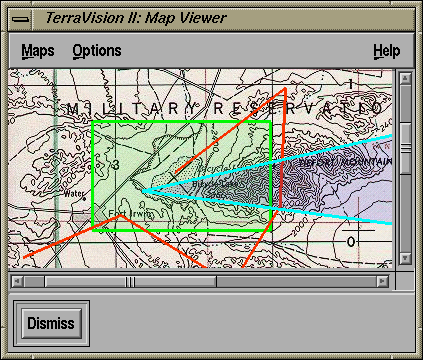
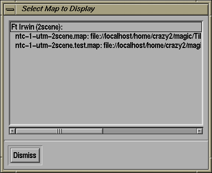

The Map Viewer

The Map Viewer is used to display an active map of the terrain that is
covered by the currently open dataset. This is an active map in the
sense that your position and field of view in the 2-D and 3-D viewers
are projected onto this map (as a transparent blue overlay) so that
you can easily ascertain where you are in the world. Additionally, you
can click over any area of the map to teleport directly to that
region. The transparent green overlay is used to denote the area of
the map for which terrain data is available. An orange line is used to
display the currently loaded flight path from the 3-D viewer.
Maps Menu Option
The "Maps" menu lets you select between different maps, unload a map
from memory, and close the Map Viewer.

- Select Map : select the map that you want to display
and where you want to load it from. Each terrain dataset that you have
loaded can have multiple maps associated with it, and these can be on
local disk or on an http server. The Select Map dialog lets you select
which of these maps you want to look at. Double click on the
appropriate map, or cancel the operation by clicking on the Dismiss
button.
- Unload Map : unloads the current map from memory and closes
the Map Viewer. The next time that you try to open a Map Viewer you
will be given the Select Map window.
- Dismiss : close the Map Viewer
Options Menu Option
The "Options" menu is used to toggle the following attributes:
- Show Coverage : toggle display of the (green) coverage
rectangle.
- Show Frustum : toggle display of the (blue) frustum
overlay
- Show Path : toggle display of the (orange) flight path
from the 3-D Viewer
Help Menu Option
The "Help" menu has two entries:
- Help on Map Viewer : displays this page from the
TerraVision User Guide
- Help on TerraVision : displays this first page of the
TerraVision User Guide
User Guide Contents /
TerraVision Home Page